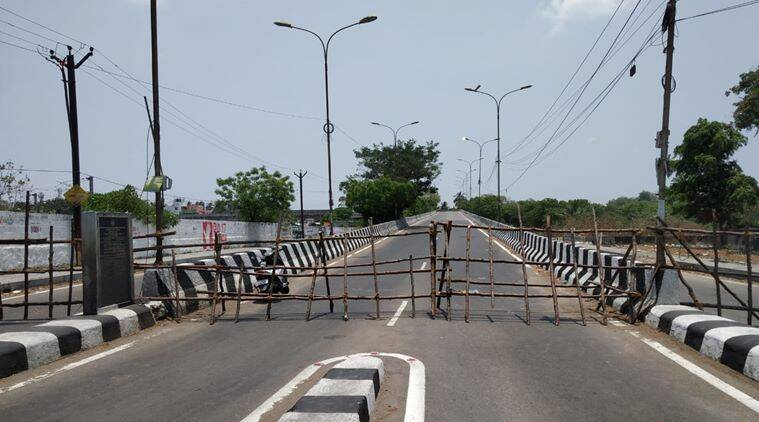

COVID-19 | Tamil Nadu announces two-week complete lockdown from May 10
The Tamil Nadu government on May 8 imposed a complete lockdown (with few relaxations) for two weeks across the State between 4 a.m. on May 10 and 4 a.m on May 24 to combat the spread of COVID-19. The State government said there would be no restrictions across the State between 6 a.m. and 9 p.m. — shops will function during this period — on May 8 and 9 to allow the public to prepare ahead of the complete lockdown. Inter-district and intra-district vehicular movement (including public transport) will remain suspended during the lockdown, except for essential travel. Travel for weddings of close relatives, funerals, job interviews and hospitals would be allowed on production of relevant documents. In a statement, Chief Minister M.K. Stalin said all shops, except provision and grocery stores and meat stalls, would remain closed. Non air-conditioned provision and grocery stores and meat stalls can remain open till 12 noon and with 50% customers. Except for those involved in food delivery, other e-commerce companies would not be allowed to function. TASMAC retail liquor shops would remain closed during the complete lockdown. Restaurants and eateries are allowed to remain open albeit only for takeaways. Tea shops can remain open only till 12 noon. Beauty parlours, salons and spas would remain closed across the State. All social, political, sports, recreational, educational and cultural events would not be allowed to be held in either indoor spaces or outdoor. Passengers coming from abroad and other States by air and rail would be monitored through e-registration. They would be provided with passes to reach airports and railway stations through https://eregister.tnega.org. Except for essential departments such as offices in the Secretariat, health, revenue, police, fire, district administration, drinking water and electricity, “no government office would function”, Mr. Stalin said. Except for continuous process industries, all private offices, including IT and ITES, would remain closed. They can work from home. All places of worship would remain closed. The public would not be allowed on beaches and tourist hubs such as the Nilgiris and Kodaikanal.